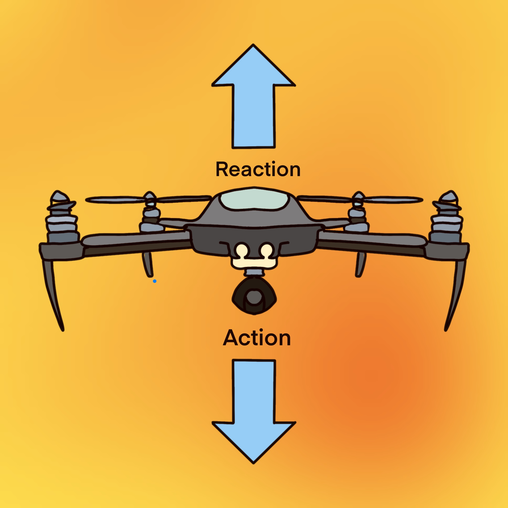
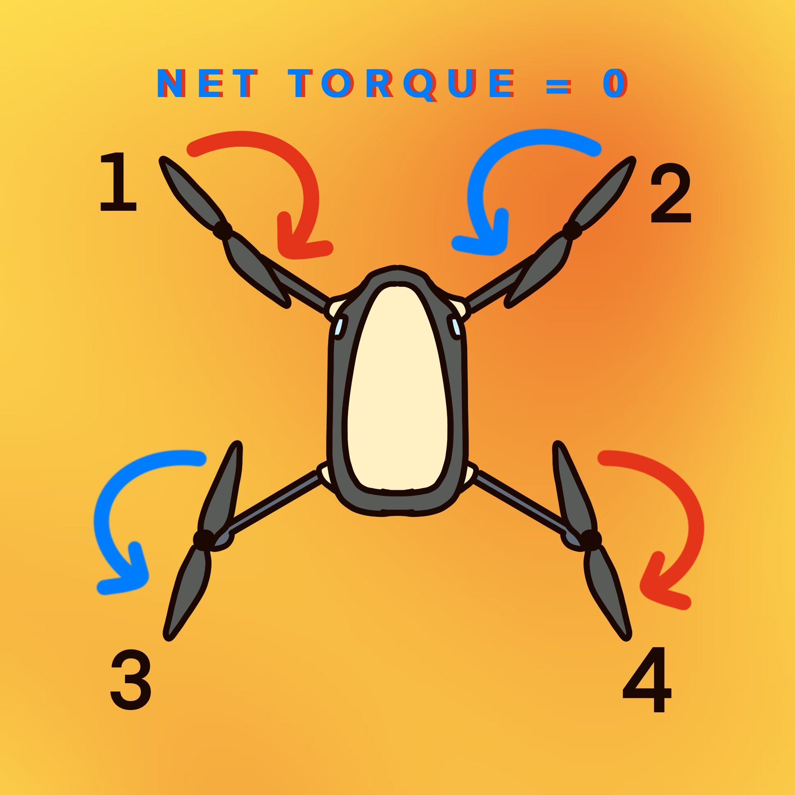

Newton's Third Law of Motion
Time for Action - Reaction Force Pair!
What is Newton's Third Law?
Newton's third law states that for every action, there is an equal and opposite reaction.One easy example for you to visualize this is when you are walking: your foot exerts a force on the ground and the ground, in return, exerts an equal and opposite direction force on your feet, allowing you to move forward.
Newton's third law states that for every action, there is an equal and opposite reaction.One easy example for you to visualize this is when you are walking: your foot exerts a force on the ground and the ground, in return, exerts an equal and opposite direction force on your feet, allowing you to move forward.

Relation to Drone:
The rotating drone's propellers push the air downward. According to Newton's Third Law of Motion, there is an equal and opposite reaction - an upward force, lift.
The rotating drone's propellers push the air downward. According to Newton's Third Law of Motion, there is an equal and opposite reaction - an upward force, lift.
Lift
What enable quadcopters to take off?
What is Lift ?
Lift is an upward force that acts against gravity. It is created by a solid object moving through a fluid. Relating to our daily life, lift is the force that acts against the weight of an aircraft and enable the airplane to take off.
Lift is an upward force that acts against gravity. It is created by a solid object moving through a fluid. Relating to our daily life, lift is the force that acts against the weight of an aircraft and enable the airplane to take off.

Relation to Drone:
If the magnitude of this force is greater than the weight of the drone, then the drone starts to ascend.If the magnitude of lift is equal to the weight of the drone, the net force is zero, and so the the drone hovers with no vertical movement.
If the magnitude of this force is greater than the weight of the drone, then the drone starts to ascend.If the magnitude of lift is equal to the weight of the drone, the net force is zero, and so the the drone hovers with no vertical movement.
Torque
Equal torque acting in opposite direction cancels each other out.
How Is Torque Generated ?
If a force is applied to an object in such a way that makes it rotates, or stops rotate, a torque is generated. Real life example of torque is when you open a door, or when you are opening a bottle cap. In drone, torque is produced as each propeller rotates.
If a force is applied to an object in such a way that makes it rotates, or stops rotate, a torque is generated. Real life example of torque is when you open a door, or when you are opening a bottle cap. In drone, torque is produced as each propeller rotates.

Relation to Drone:
As there is always an equal and opposite force, the drone will rotate in the opposing direction of the propellers' rotation direction if all of the drone' propeller rotate in the same direction. To prevent the drone from rotating, we make the drones' diagonal propeller pair (1,4) rotate clockwise, while the other diagonal pair rotate counter-clockwise. This way the net torque is equal to zero, and the drone has no rotaional movement.
As there is always an equal and opposite force, the drone will rotate in the opposing direction of the propellers' rotation direction if all of the drone' propeller rotate in the same direction. To prevent the drone from rotating, we make the drones' diagonal propeller pair (1,4) rotate clockwise, while the other diagonal pair rotate counter-clockwise. This way the net torque is equal to zero, and the drone has no rotaional movement.